|
Presentatie trainer en assistenten KickOff |
Presentatie trainer en assistenten KickOff
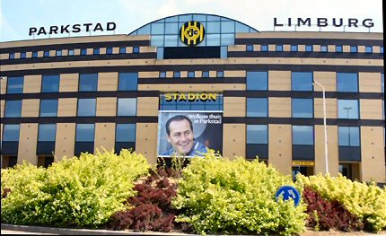
Vrijdag werd de langverwachte trainer dan eindelijk officieel bekendgemaakt.
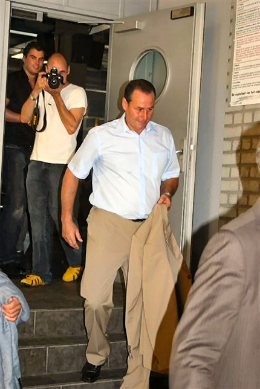
Huub Stevens keert na negen jaar weer terug in Kerkrade.
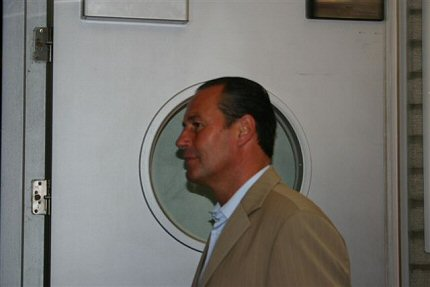
Na de perspresentatie was er een informele presentatie in de
Kickoff voor
de supporters.
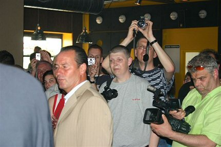
Tegenwoordig loopt iedereen met een camera rond.
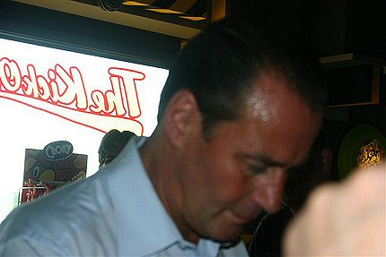
Parelend hoofdzweet vanwege het broeikasteffect in het home.
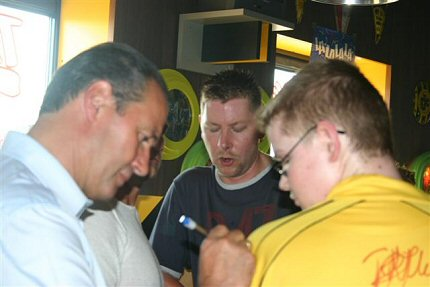
Huub kan meteen aan de slag...met een signeer-sessie.
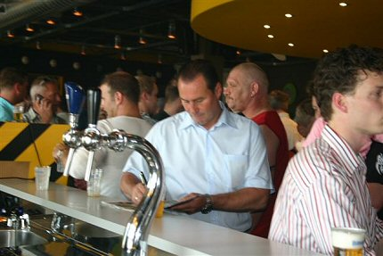
Ondanks het vroege tijdstip op de vrijdagmiddag kwamen er veel
supporters
opdagen.
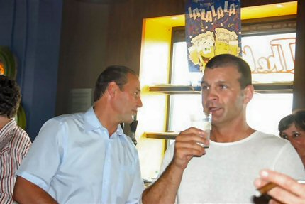
Assistent-trainer Atteveld.
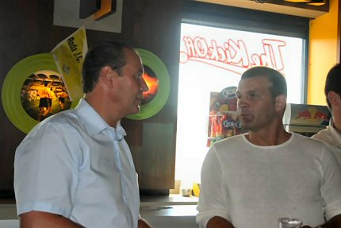
Het verwachtingspatroon van beide heren ligt erg hoog.
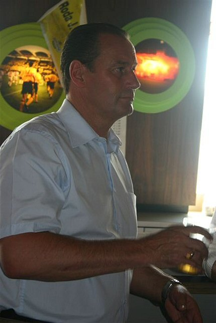
Waar is nummer 3 van het "dreamteam"?
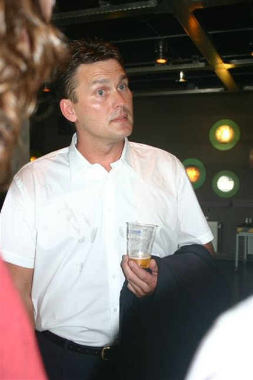
Daar is hij dan: Ruud Hesp, keeperstrainer en team-manager Roda
JC !!
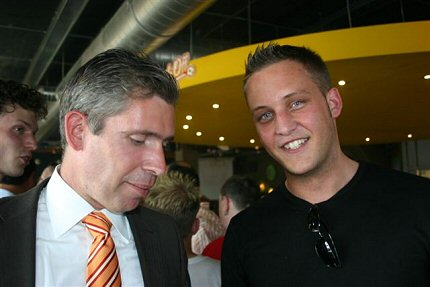
Ingetogen trots bij het bestuur en grote euforie bij de Rodafans!
Foto's: Ruud van Breemen